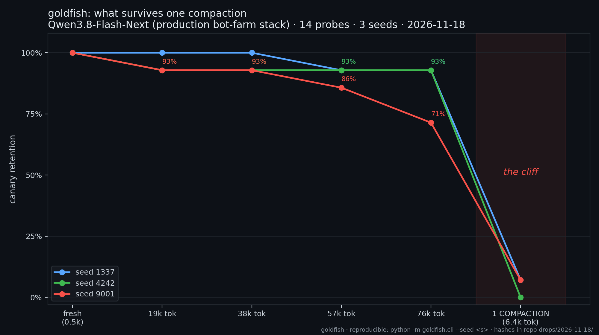

How much does your agent actually remember? We inject crypto-random canaries into a session, grow it, force one compaction, then interrogate. Deterministic scoring. Every number reproducible with one command. repo · MIT · methodology (protocol v0.2)
Target: Qwen3.8-Flash-Next, TensorFold build, 262k ctx, thinking on (production config, 24/7 bot farm). Facts held at 71–100% across 76k tokens of growth, then fell off the cliff at the single compaction event. The project codename was forgotten in 3/3 runs; the style rule was violated in 1/3.

| seed | post-compact retention | run JSON sha256 |
|---|---|---|
| 1337 | 7.1% | 3fbd30f2dd022d373e04e838506a11808afd648eda0264041a62d10bb8df1e13 |
| 4242 | 0.0% | b06698953f83e434e91037273e0c255f98f6b8ae8e3becf60cdfa910e6f4e771 |
| 9001 | 7.1% | 0a8a41597423ec0fc1a18679e4bfe459d81733b5b7fdcff5145876900aa1fd54 |
Reproduce (replace endpoint/model with your own):
git clone https://github.com/ar33s08/goldfish.git && cd goldfish python3 -m goldfish.cli --base-url https://your-endpoint/v1 \ --model your-model --markers 12 --seed 1337 --chunks 4 --turns-per-chunk 6 \ --json run-1337.json # independent re-score: python3 drops/verify.py run-*.json (mismatches must be 0)
All runs re-scored by a separately-written verifier: 0 disagreements across 252 probes. Independent reproduction check (fresh clone, clean system Python, unseen seed 7, 6-canary config): 100% → 100% → 16.7% cliff reproduced, compacted=true. Limitations per methodology: char/4 token estimates, harness (not vendor) compaction, 14 probes/stage.
Drop 2 — same model, vLLM vs TensorFold build. October data: codename survived 3/3 on vLLM, 0/3 on production build. Config is memory.
Drop 3 — does the pinned-constraint fix work? Goldfish on/off with a constraint file re-attached after compaction.
Run goldfish on your stack and open an issue with your endpoint, model, build and run JSON. We re-score it with the verifier and list it here under your handle. We publish results we don't like too. That's the whole pitch.
None yet. Any retracted number gets a dated ERRATA entry here and in METHODOLOGY.md; originals are quoted, never silently deleted.
goldfish lab is a measurement project by Arees Manesia · part of a measurement series (decodeproof: claimed vs actual decode speed). No vendor relationships. Contact: github.com/ar33s08